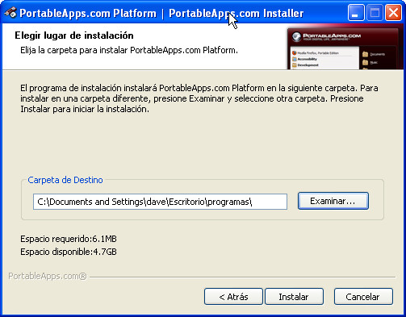
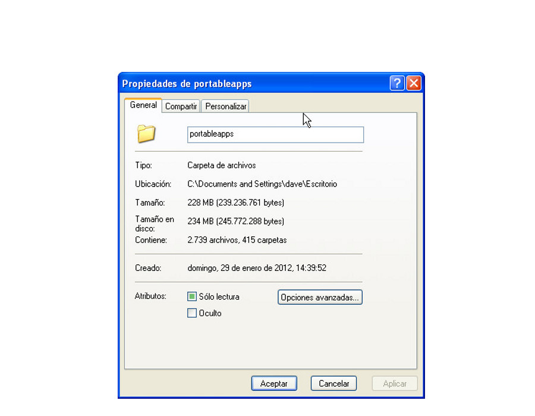

En la práctica de hoy empezaremos a utilizar programas descargados desde las Portable Apps y que puedan ser útiles para nuestro día a día con el ordenador.
Ejercicio 1
Siguiendo los pasos que te ha indicado el profesor en la presentación, conéctate a la web de las Portable Apps y descárgate la última versión.
Una vez descargada la aplicación, instálala en un directorio del Escritorio llamado "programas".
Ejercicio 2
Ya tenemos instalada la aplicación de las Portable Apps, que nos permitirá instalar de manera sencilla cualquier aplicación que no tengamos en nuestro ordenador. Así que, tranquilamente, observa la lista de aplicaciones a instalar posibles e instala estas aplicaciones que te comento aquí, una detrás de otra:
- Categoría Internet: Google Chrome
- Categoría Gráficos y Fotografías: Fotografix
- Categoría Juegos: Brutal Chess
Ejercicio 3
Comprueba cuánto espacio ocupa la carpeta "programas" donde estamos istalando todas las aplicaciones. Para hacerlo pulsa con el botón derecho del ratón y busca la opcion Propiedades.
